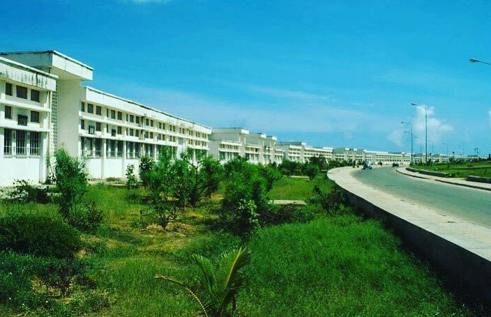

Somali National University
My university is Somali National University.It was stablished in 1954 in the Trust Territort of Somalia. It obtained official university status in 1969, it was closed due to the civil war, and later on re-opened in 2014, the main compus of the university is Gahayr compus, which has large scale of land and beautiful gardens.
It is a place where students from different backgrounds and defferent regions come together to learn, grow, and build a better future.
I am proud to be a student at Somali National University, i am part of the Computer Science and have had the opportunity to study under some of the most inspiring professors like Prof Abdullahi Sharif. My university offers a wide range of academic programs, advanced research facilities, and a vibrant student community.

Prof. Hassan Osman Ga’al: is the Rector of the university
Some Pictures of Gaheyr compus
If you need to find more about Somali National University visit Somali National uniuniversity site